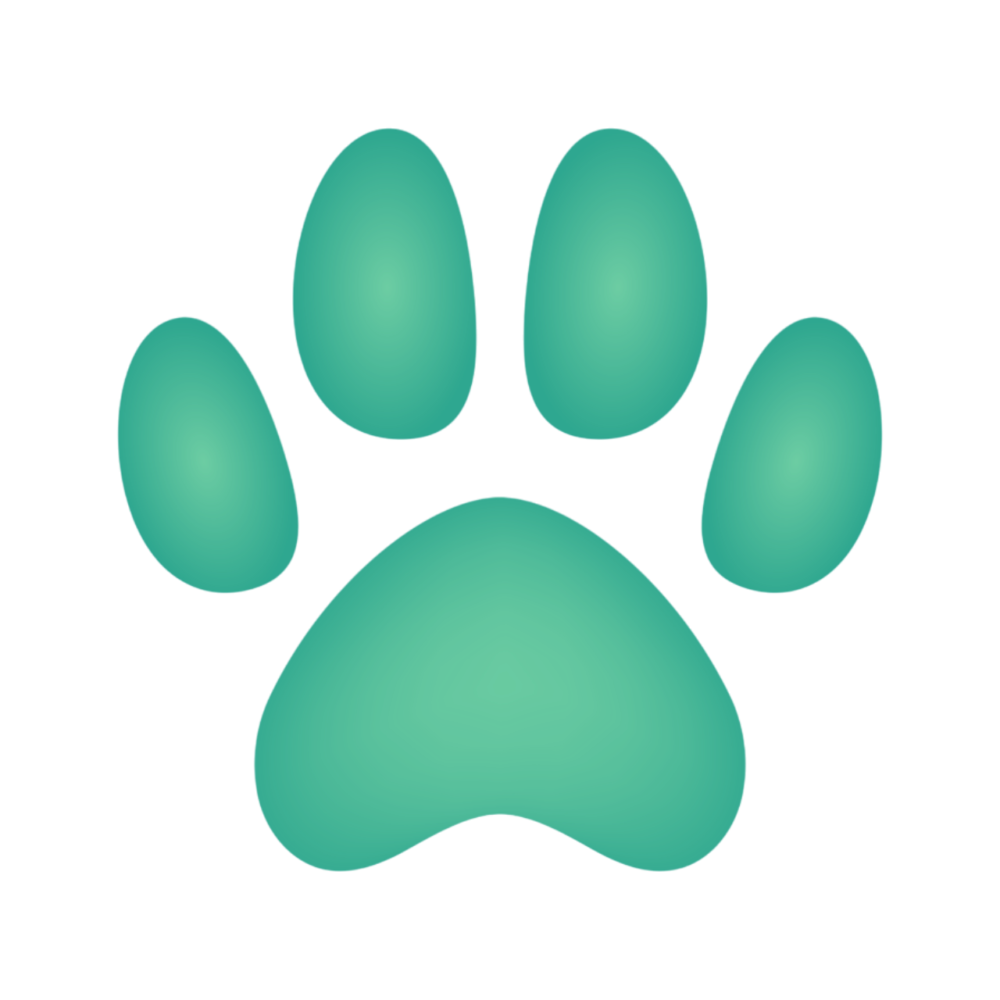

Sobre Nosotros
Somos una organización dedicada a rescatar y encontrar hogares para gatos necesitados. Creemos en segundas oportunidades y en el amor que estos felinos pueden traer a tu vida.
Leer más

Somos una organización dedicada a rescatar y encontrar hogares para gatos necesitados. Creemos en segundas oportunidades y en el amor que estos felinos pueden traer a tu vida.
Gracias a vuestras donaciones, nuestras colonias pueden comer todos los días.
Haz una Donación